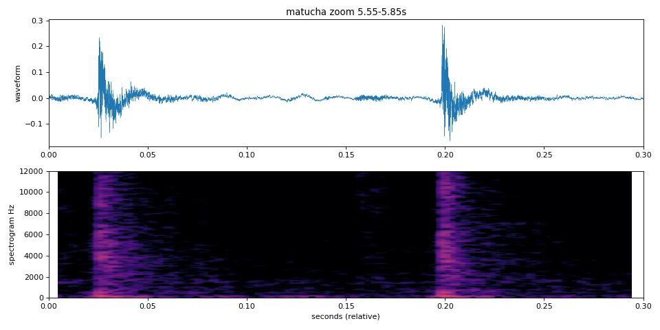
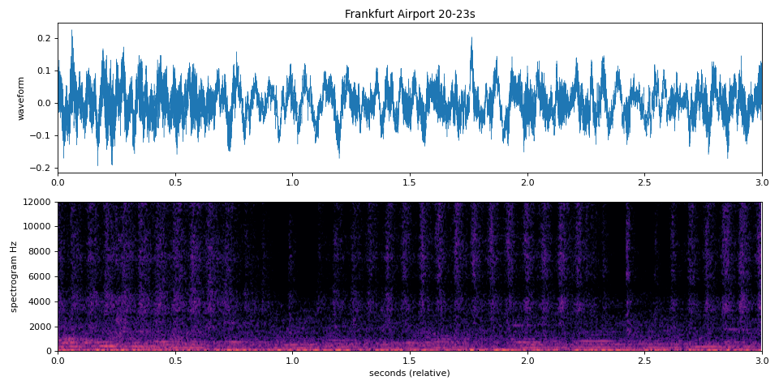

An event, then silence — information that arrives, and then sits still.
--:--:--
Judge this on the television, at the sofa. For the board input use the TV’s Game, Filmmaker or PC mode so its own motion smoothing does not invent frames between flaps.Motion Wave · 85 ms / flap · Sound Real recordings · sliced flaps ·
Airport sounds
Off. The life of the terminal — people, footsteps, rolling suitcases, distant announcements — as its own track, separate from the board’s clack.
Hear a signal on its own
The aim of this track is the true ambience of an airport, through audio alone: immersive enough to close your eyes and feel you are there. So it is built as a layered soundscape, not one flat recording — a spacious terminal bed (crowd murmur, air handling, distance) underneath sparse events that come and go: footsteps crossing, a rolling suitcase, a distant trolley, an announcement signal with a real announcement behind it. On fades in over 3 s at a random point in the recording; off fades out over 2 s, then the players are stopped outright and every ambient gain is set to zero — off means silent, not merely quiet, and with the track off the board is dry flaps with nothing behind them. The level drifts slowly and the beds crossfade over 8 s, so nothing sits still long enough to sound looped — and there are no board sounds anywhere in the track: the one passage in the Lanzarote recording where a distant board could be heard turning was cut out of the excerpt. The track sits about 20–25 dB below the clack and ducks a further −9 dB while the board turns, so a cascade always speaks first. Quiet hours (22:00–07:30) fade it out and switch it off; it never restarts itself, and flipping the board never switches it on. Announcements adds the PA layer, with a choice of two signals: the international double dong — two soft tones, high then low, the standard signal terminals across Europe and Asia play a breath before the voice — or the Charles de Gaulle motif, a short melodic figure modelled on Paris CDG’s own airport signal, the ADP indicatif in use since 2005. Either signal is followed by an announcement voice, chosen with the Voice selector: by default a real recorded announcement — a Frankfurt Airport announcement in German and English, a generic boarding call, or a boarding announcement recorded at Chicago Midway — played through the hall at a distance, the way a PA voice actually arrives. (An earlier build had only a synthesised murmur after the dong; heard in use it read as a strange noise, not a voice. The recordings are now the default and the recommended voices; the synthesised voice remains in the selector only as a clearly labelled comparison — a wordless distant murmur with no words in it, there so the difference can be heard, not as an announcement voice in its own right — along with an option that alternates the two.) The first announcement sounds within seconds of switching the layer on, then every minute or so. The Hear a signal buttons play either signal with a full real announcement after it, on demand, whether or not the track itself is on. The two signals themselves are synthesised evocations, not recordings of the real things — no source publishes the CDG indicatif’s actual notes, so that motif is modelled on its described character and labelled as such — and neither is the French railway’s four-note SNCF station motif. The announcements themselves — including new spoken announcements for The Isle, Honolulu (HNL), Bora Bora (BOB) and Phuket (HKT), a page for passenger Cakes and a separate page for Mrs Silver to meet her party at the lounge, each recorded in nine voices — live in the Announcements on their own panel directly below, where any announcement can be paired with any voice and heard with no ambient track at all.
Announcements on their own
The signal and the announcement as their own audition, separate from the Airport sounds track. With Airport sounds off, the announcement is heard entirely on its own — no terminal bed, no crowd, nothing underneath. With Airport sounds on, the bed stays underneath the voice, ducked modestly while it speaks, the way a real PA rides over a living terminal — it never pauses and never disappears.
Pick an announcement and a voice independently — any spoken script can be heard in any of the nine voices. The live recordings keep their original recorded voices, so the Voice menu does not apply to them.
Nothing playing. The full wording of every spoken announcement is printed in Announcement scripts for review below, exactly as it is read aloud.
How it plays: the chosen signal sounds first (the international double dong, or the Charles de Gaulle motif), then, after the same breath a real PA leaves, the announcement itself — the spoken scripts are real recorded speech, voiced at build time in each of the nine voices, played through a light PA treatment (band-limited, a touch of hall) so they sit where a terminal voice sits. If the Airport sounds bed is playing, it ducks modestly under the voice and comes back up when the voice ends; with Airport sounds off there is nothing else in the room at all. The wordless murmur stays in the menu only as the labelled comparison it has always been: pitch and cadence with no words inside it.
TimeFlightDestinationGateRemarks
Notice
How this board was rebuilt
This round started fresh from a second deep research pass — professional practice for repetitive mechanical sound, the best documented web recreations, and the psychoacoustics of when clicks fuse — and applied its enhancement specification in ranked order, with the clack as the core focus throughout. The flap sounds remain real recordings: single steps and full flap events sliced out of a recording of one real Pragotron module. What changed is everything around the samples: how they are chosen, layered, timed, thinned and levelled, so that no cascade ever sounds like the same take twice and a full board never fuses into a buzz. Separately, the life of the terminal — people, footsteps, intercoms — is now its own audio track with its own switch above, built from real airport terminal recordings and mixed entirely apart from the clack. One limit, stated plainly and unchanged: the clack samples were cut from high-quality previews of the Freesound originals, not from the full-resolution masters; the research ranks re-slicing from the original WAV files as the next gain after this one. Between changes the board does nothing at all.
The flip, as specified
Forward only, through every intermediate. A tile travels the drum from where it is; a letter further round takes longer. Unchanged tiles never move, and nothing reverses, fades or teleports.
85 ms per flap in Wave mode — fall 45 ms, landing 40 ms — inside the researched 70–110 ms range. A reverse-engineered original Solari unit runs at about 75 ms per flap; Changi’s board was reported at 5 flaps/s. The sources disagree, so this is a range, not a consensus.
Gravity, not easing both ways. Each fall is let go three degrees past vertical, so it hesitates at the top, accelerates through the horizontal with cubic-bezier(0.45, 0, 1, 1), slaps onto its stop, and — on the final landing only — flutters for 120–200 ms before dead stillness. Intermediate flaps barely bounce. The model this follows (Stoatworks) uses a coefficient of restitution of 0.24 at the stop and puts the whole flutter at about three flip times; its sound is timed to the end of the fall — the slap lands when the flap lands, not at the flip’s midpoint.
A cascade, not a unison. Column stagger 30 ms, row stagger 15 ms, per-tile jitter 0–20 ms and a fixed per-tile rate within ±4% — the same tile keeps the same motor for the whole run. Travel over 24 steps switches to fast blur travel at 30 ms per step, with the last three steps always fully animated, so a whole change lands within about 2.5 s.
The split is real. Four layers per tile — static top already showing the next character, static bottom, falling flap, landing flap — the bottom half swaps mid-fall, behind the descending flap, with a constant hinge line and a shadow that sweeps the lower half.
The sound — real flaps, recorded and sliced
What plays is a recording, not a synthesis. Each tile step plays one of 22 single-step slices cut from matucha’s recording of a single Pragotron module (Freesound 174056, CC BY-NC) — one module, recorded with a Barcus Berry contact microphone plus a Schoeps air pair, so the conducted thump of flap on stack is in the sound, not just the air around it. Final landings and one-or-two-character changes play full flap events cut from the same module (−45 ms to +300 ms around the hit). No synthesised flap core remains anywhere in the board; the only synthesis left on the page is the lab’s labelled “old way” button, kept for contrast.
Why the syntheses sounded tinny and static-y — measured, not argued. Measured on the recordings in this workspace (numpy/scipy, 26 November 2026): a single real flap is a jagged, irregular broadband burst of about 10–25 ms, energy across the whole spectrum at once and strongest at the bottom — many impacts carry 45–65% of their energy below 200 Hz — with a secondary low swell 15–30 ms after the spike (the bounce/thump tail), and near silence between flaps. Every synthesis design was the opposite shape: band-limited ticks centred too high, too clean, too regular, no low thump, no jagged multi-contact burst, no real room. Hence “tinny” (no low body) and “static-y” (a regular synthetic noise texture where discrete irregular impacts belong).
The module’s own rhythm. While running, the recorded module steps at a median gap of 156 ms — about 6.4 steps per second — with gaps spread from 118 ms to 209 ms (10th–90th percentile). Not a metronome. This board’s visual step is 85 ms, faster than any single module steps, so step samples sound at most every other visual step; a tile travelling far uses the module’s continuous run recording for its middle, step samples for its first and last steps, and a full flap event for the landing.
Never the same take twice in a row — a true round-robin. The previous build picked at random and only avoided an immediate repeat; pure random still deals the same take twice within a few flips by chance, and the ear flags exactly that — the “machine-gun effect” game audio teaches against. The step and flap pools now run as shuffled bags: the pool is shuffled, played through to exhaustion, then reshuffled so the last three takes played cannot open the new bag. Professional starting points (a documented Wwise project: avoid previous 2, pitch ±40 cents, volume ±1.5 dB) set the scale of everything below.
Each clack is three layers from different takes. Following impact practice — attack, body, tail, each on its own footing — a landing is no longer one slice. The body is a full flap event; the attack is a different step take, high-passed, a few milliseconds ahead of it, allowed a wider detune because it is short; the resonance is a third take, low-passed and quiet, arriving just after. Re-rolled independently, a handful of files yields well over a hundred perceived clacks, and no layer ever repeats in step with another.
Tight randomisation, not wide. Body playback rate 0.97–1.03 (the old 0.94–1.06 wandered toward different-sized flaps), gain ±1.25 dB, a per-voice low-pass randomised between about 6 and 14 kHz, onset jitter Gaussian at ±3–12 ms, and one motor drift of ±2% shared by a whole cascade — neighbours drift together, the way a loaded motor does, instead of each tile wandering alone. The impact still sits 45 ms into every slice, scheduled to land at the end of the tile’s visual fall, and each tile is still panned by its column.
The scheduler is capped, spaced and thinned. At most 10 clack voices at once (6 in Soft), never two onsets closer than 25 ms — the limits splitflap.org, the best-documented web recreation, arrived at (8 voices, 25 ms) after finding that a hundred copies of one click “phase together into a buzz”. Click-train research says why: individual clicks stay distinct up to roughly 10–16 per second, flutter through the twenties, and fuse toward roughness and pitch above about 32 per second — so as a cascade densifies, intermediate steps are thinned by probability rather than stacked, and per-voice gain falls as density rises, holding a full cascade to roughly 8–12 dB above a single flap instead of twenty-plus. Two repairs from hearing the board in use: spacing is now kept by dropping a voice whose turn would come more than about 90 ms after its flap, never by letting onsets bank up and drift late; and nothing at all is scheduled after the last tile lands beyond a single short settle — not on fixed timers, and not once per row — so when the board stops moving, the board stops sounding. A third repair, from the same hearing: the extra low wash voices that used to be layered under a busy cascade purely for density are removed outright, and the settle no longer trails a low resonance tail after it — both lingered under and behind the clacks in a way that read as ambient sound with the Airport sounds track off. A real board’s own spread is wider (maker Oat Foundry specifies 45–75 dB by module count); on a television that full spread would have the owner reaching for the remote.
Cascades are shaped, and landings are accented. A cascade starts hard — its first flaps carry a velocity accent — thins through its middle, and returns to medium-hard for its final landings, so the board is heard to stop, not just to stop sounding. Velocity is simulated the sampler way, by gain plus low-pass together (soft is darker, not just quieter). After the last landing, a settle cluster and then 120–250 ms of low resonance alone, then silence. All clacks share one small-room convolution (a generated 0.35 s impulse, wet about −23 dB) and a gentle 75 Hz high-pass, so disparate slices sit in one mechanism in one room — the hall-sized space lives only on the airport-sounds track, never on the close clack. A limiter at the master keeps peaks at about −1 dB.
A full board is near flaps, dry. Earlier builds ran a recording of Frankfurt Airport’s own board (iainmccurdy, Freesound 546828, CC BY) as a wash under every cascade, and looped a station room tone behind the board in display mode. Both are gone from the board’s sound: heard in use, any bed under the tiles reads as ambient sound behind the clack even when the Airport sounds track is off, so the board now plays its per-tile flap samples and nothing else — a stopped or running board with Airport sounds off is dry flaps only. The Frankfurt recording remains where it belongs, in the sound lab, as the “Full cascade” audition its button labels bed + flaps. Measured, the Frankfurt wash is low and thick — a persistent bed below about 1 kHz, most energy below 4–5 kHz, little above 8 kHz. The alternate bed, ngruber’s board cascade (Freesound 261244, CC0), is brighter, its impacts centred near 7 kHz — boards differ by material and size, which is itself part of the evidence.
No room tone under the board. The station room tone (mab, Philadelphia 30th Street Station, Freesound 23026) that once looped at about −30 dB in TV/display mode and under cascades has been removed outright: it was an ambient layer on the board’s own chain, outside the Airport sounds switch, and in display mode it never stopped. Ambience lives on the Airport sounds track or nowhere. There is no presence boost and no brightening anywhere: the low thump is kept intact, because it is the difference being asked for.
Gentle / Soft stays a real mode: 120 ms per flap, fewer simultaneous samples, lower gain, beds off. Quiet hours, 22:00–07:30, start in Soft automatically. Status changes stay honest: when only a remarks word changes, only its tiles flip — no chime, no announcement.
The remaining limits, stated plainly. The samples were cut from high-quality previews of the Freesound originals rather than the full-resolution WAV masters — Freesound’s own FAQ confirms previews are low-bitrate encodings that smear exactly what a clack is, a 5–20 ms transient — and the step set is every third detected step of the one module recording: 22 steps and 4 full events, which the bag, layering and randomisation now stretch much further, but do not multiply. The research’s ranked next steps, in order: re-slice from the original WAV/FLAC downloads (the matucha module at 44.1 kHz/24-bit; the mab Philadelphia pack’s 96 kHz/24-bit WAV rather than its MP3 version); widen the pool toward 12–16 landing takes, adding ngruber’s CC0 recording (Freesound 261244) once it has been auditioned and measured; and only if those still disappoint, record a module directly — a contact microphone on the housing plus an air microphone 10–30 cm away, the same two-perspective rig matucha used. The acceptance test is the research’s: single flap, ten-flap change and full cascade at living-room volume, eyes closed — no two consecutive clacks identifiable as the same take, the cascade no louder-feeling than a loud programme passage, its ending clearly heard to land, and ten minutes of intermittent updates causing no urge to turn it down.
Airport sounds — a separate track, its own switch
The aim of this track is the true ambience of an airport, through audio alone: immersive enough that someone can close their eyes and feel they are there. That is the standard it is judged against, and it is why the track is built as a layered soundscape rather than a single flat bed. The ambient life of the place is not part of the board’s sound and is never triggered by it: it sits on a separate gain stage, behind the Airport sounds switch in the controls above — off by default, and it stays off until switched on, whatever the board does. The bottom layer is a spacious terminal bed — crowd murmur, air handling, distance — from real airport terminal recordings, never a station. Three excerpts ship in this sample: Manchester Airport departures (120 s excerpt, from theplax’s Terminal 2 recording, Freesound 562268 — passengers, automated and human announcements, footsteps, luggage, restaurant noise), Kuala Lumpur Airport (about 119 s, from gladkiy’s Terminal P6 recording, Freesound 333226, CC0 — crowd and announcements) and Lanzarote main hall (about 84 s, from shapingwaves’ busy main-hall recording, Freesound 362372, Attribution 4.0). Over the bed, sparse event layers come and go at random — footsteps crossing the hall, a rolling suitcase passing, a distant trolley’s rattle, and the announcement signals with their muffled PA — panned across the stereo field and set deep in a long hall, so the ear is placed inside a space rather than in front of a recording. The bed’s level drifts slowly and the beds crossfade over 8 s instead of hard-looping, so nothing repeats obviously. And there are no board sounds anywhere in the track: the beds were checked spectrogram by spectrogram, and the one passage that failed — a stretch of the Lanzarote recording around the one-minute mark where a distant departure board can be heard stepping, a train of regular broadband stripes — was cut out of the excerpt and the join crossfaded; the Kuala Lumpur excerpt likewise starts a breath in, past a single clack-like bang at its head. The announcement layer offers the two signals side by side: the classic international double dong — two soft tones, high then low, the standard signal terminals across Europe and Asia play a breath before the voice — and the Charles de Gaulle motif, a short melodic figure modelled on Paris CDG’s own airport signal, the ADP indicatif in use since 2005. Either is followed by a real recorded announcement, set at a distance in the hall: a Frankfurt Airport announcement in German and English (euromir, Freesound 256878, CC BY-NC, 0:29.6, MP3 original), a generic boarding call (soundmary, Freesound 117588, CC0, 0:32.4) and a boarding announcement recorded at Chicago Midway Airport (bmccoy2, Freesound 162654, CC BY, 0:18.8, recorded 5 August 2012 — flight-specific, as a real call is). The build this replaces had only a synthesised voice-shaped murmur after the dong; in use it was heard as a strange sound, not as an announcement at all — shaped noise and formants carry no words, and the ear knows the difference. The recordings are the default and the recommended voices, and the scheduled announcements use them; the panel’s Voice selector keeps the synthesised voice only as a labelled comparison — a wordless distant murmur, no words in it — for anyone who wants to hear the difference, and can alternate the two. A real voice, band-limited and placed deep in the hall, is what a terminal actually sounds like after its chime. In the ambient layer the announcements play as distant excerpts; from the buttons in the panel and in the lab below, either signal plays with a full announcement after it, on demand, without waiting for the layer to schedule one. The CDG motif itself remains an evocation: no source the research found publishes the indicatif’s actual notes. And the off state is now a hard off — switching Airport sounds off fades the track out, then stops the bed players outright, zeroes every ambient gain and cuts any event or announcement still sounding, so with the track off no ambient path is left open behind the board. The one signal deliberately kept out is the French railway’s four-note motif: a station sound, and a trademarked SNCF logo. The mixing follows the research’s specification: the bed sits roughly 20–25 dB below clack peaks (background at least 20 dB below foreground is also the WCAG benchmark for speech), ducks −6 to −12 dB under cascades, crossfades over 8 s instead of hard-looping, and observes quiet hours. Hedges carried from the research: these are shortened excerpts prepared for this sample, not the full recordings (Manchester 4:52, Kuala Lumpur 6:36, Lanzarote 3:34); the Manchester recording’s licence is listed as to-be-checked on its Freesound page and must be re-checked there before any use beyond private home playback. For a permanent installation the research’s longest airport bed is tim.kahn’s Raleigh-Durham Terminal 2 walk (21:31, FLAC) — downloadable as an original file from its Freesound page, never from a preview.
Announcement scripts — for review
Every spoken announcement on this page, word for word as it is read aloud, so the wording can be reviewed before it is judged by ear. These scripts were rewritten from primary-source research into how real airports actually word their calls (the findings are set out in full further down this page): a real boarding, final or paging call runs 15–40 words in two to four short segments, is built from a small stock of fixed formulas, names the destination and never the origin, and earns any extra length only by repeating the operative element — the gate or the name — never by adding information. The earlier scripts on this page failed exactly the way the research says fakes fail: over-long, over-polite, over-explained. Flight and gate numbers are the sample’s own, matching the board above, and are there to be changed. The live recordings at the end are real announcers in real terminals; their words are their own and are not scripted here.
Test flight — Miami (17 words)
“Flight AA 2241 to Miami is now boarding at gate C3. Please have your boarding pass ready.”
Form: the British Council’s general-boarding transcript — a telegram-style identification fragment, then the documents-ready instruction. The origin is deliberately not spoken: no real departure call names it; “Orlando to Miami” belongs on the board, not in the voice. The quick voice test: one press of “Hear the test — Miami” above plays it in whichever voice is selected.
The Isle — final boarding call (21 words)
“This is the final boarding call for flight IS 101 to The Isle. Please proceed to gate A4 immediately. Thank you.”
Forms: IndiGo’s last-and-final-call template, word for word in structure; the Junta de Andalucía final call (“This is the final call for flight…”).
Honolulu (HNL) — boarding (21 words)
“Flight HA 51 to Honolulu is now boarding at gate B7. Please have your boarding pass and passport ready for boarding.”
Form: the British Council boarding transcript — “Flight FR3421 now boarding at gate 21” plus its boarding-passes-and-passports-ready clause.
Bora Bora (BOB) — boarding call (22 words)
“Ladies and gentlemen, we are ready to board flight VT 442 to Bora Bora, from gate D2. Thank you for your cooperation.”
Forms: IndiGo’s boarding template (“We are ready to board IndiGo flight 6E___ to ___, from gate no. ___”) with IndiGo’s own closing.
Phuket (HKT) — boarding call (14 words)
“Attention please, passengers for flight TG 921 to Phuket will board via gate C5.”
Form: Schiphol’s own published automated call, word for word in structure — “Attention please, passengers for KLM flight 325 to Athens will board via gate D15.” The shortest authentic form, and the appropriate one for an automated voice.
Paging — passenger Cakes (13 words)
“Will passenger Cakes please go to Airport Information. Passenger Cakes to Airport Information.”
Form: the Junta de Andalucía paging transcript, verbatim in structure, including the compressed repeat (name + place, nothing more). “Cakes” is treated as the surname, as given; no first name was supplied.
Paging — Mrs. Silver, to meet her party at the lounge (18 words)
“Will Mrs. Silver please go to the lounge, where your party is waiting. Mrs. Silver to the lounge.”
Form: the same attested European paging structure (“…please go to Airport Information where your host family is waiting” + compressed repeat). Carried with its caveat: this exact page is prohibited on the general PA at Tampa International, whose directive bars paging an individual to meet their party at a location, and Changi Airport does not page individuals at all — authentic for the European form, not universal practice.
Live recordings — not scripted
Three further announcements in the menus are real recordings, kept in their original voices: the Frankfurt Airport announcement, made in German and then in English (euromir, Freesound 256878, CC BY-NC), a generic boarding call (soundmary, Freesound 117588, CC0), and a boarding announcement recorded at Chicago Midway Airport (bmccoy2, Freesound 162654, CC BY, 0:18.8, recorded 5 August 2012 — a real flight-specific call, so it names its own flight and date, the way a live call does). They are also the voices the ambient track’s Announcements layer uses. Alongside them in the standalone player, the wordless distant murmur remains available as a labelled comparison only — cadence and pitch with no words in it, the sound that prompted this rebuild.
Announcements — what the research settled (primary sources only)
This board’s announcements were rebuilt from a deep research pass that relied only on sources opened and read in that run — no earlier findings carried over. Anything that could not be verified from an opened source is marked unverified below rather than filled in. The headline: real announcements are much shorter and more formulaic than a plausible-sounding invention — about 15–40 words in 2–4 short segments — and the only longer examples in the evidence are long because they repeat a name, a gate number or a passenger category, not because they add information.
The anatomy. Attention call → identification (airline + flight + destination) → the one fact → the one instruction → repetition of the operative element → a bare closing. No opened example adds a seventh element: no background, no explanation, no second action. Segmentation in the transcripts runs identification sentence → instruction sentence → repeat → optional “Thank you.”
The formula library (every item attested in an opened source). Openers: “Attention please,” · “May I have your attention, please.” · “Ladies & Gentlemen,”. Frames: “This is the final boarding call for…” · “This is the gate change announcement for…”. Verbs: proceed, go to, board, report to, have (documents) ready. Repetition devices: “I repeat, gate [X].” · the surname-only compressed repeat (“Passenger Fernandez to Airport Information.”). Closings: “Thank you.” · “Thank you for your cooperation.” · “Have a pleasant flight.”
Evidence transcripts. British Council teaching tapes: a 28-word delay, a 26-word general boarding call (“Flight FR3421 now boarding at gate 21”), a 49-word named final call that is long only because the name block repeats. Junta de Andalucía tapescript: the 22-word page of José Fernandez to Airport Information, a 29-word final call, a 26-word security reminder. Schiphol’s own published automated call is 15 words: “Attention please, passengers for KLM flight 325 to Athens will board via gate D15.” The one long text in the evidence, a ~95-word US security announcement quoted in a Fourth Circuit opinion, is a looping federal regulatory text, not an operational call.
Delivery, from an airline’s own script book (IndiGo). Read the published words verbatim; speak slowly and clearly; pause after every sentence ending; stress the operative word; keep diction neutral; and never sound “bookish/scripted, bored/monotonous or robotic”. Warm-neutral is the target — controlled, pleasant, modulated — not flat, and not radio-cheery. A numeric speaking pace could not be verified from any opened primary source: UNVERIFIED, and no figure is used here as a standard.
How the real hubs produce the voice — the London model this board follows. At the big European hubs the voice is usually not live and not consumer text-to-speech: it is a library of recorded human fragments, recorded in multiple intonations and assembled by rule. Schiphol has run such a system since 1998; only announcements containing a person’s name are still made live there. AviaVox’s ATeC system — deployed at Heathrow, Schiphol, New Delhi and Doha — splices recorded speech fragments into announcements, over 8,500 unique announcements per language, targetable by zone and time and configurable for a silent-airport policy. Carolyn Hopkins, whose recorded voice is heard at LaGuardia, JFK, Newark, Paris Charles de Gaulle and Incheon, records in short takes — the longest take is 16 words — strung together by computer. So this board follows the same discipline: one fixed formula script per call, read verbatim by the chosen voice, sentence pauses intact, stress on the gate and the name, through the PA treatment. Frankfurt’s own system could not be verified from an opened source, so Germany is not claimed by name; the documented model is London’s and Schiphol’s.
The silence finding — Asia and the quiet hubs. Singapore Airlines’ own Changi page states flatly: “Changi Airport does not make final call announcements or page specific customers.” At such airports the authentic announcement is the board itself. (Passenger-video transcriptions indexed in the research record a gate-level final call at Changi; only the airline’s statement is verified from an opened primary source, and both are reported as found.) Paging is rationed everywhere it exists: Tampa International limits paging to one page per person in any ten minutes and routes the paged person to a page telephone; Prague’s service agreement guarantees a final or personal call within 3 minutes of request, from a closed list of PA categories.
What makes a fake, per the evidence. Too much information; over-politeness and padding beyond “please” and a bare “Thank you.”; naming the origin city; invented verbs (“make your way”, “kindly proceed towards”); no repetition of the operative element; continuous-paragraph delivery with no sentence-end pauses; robotic flatness or DJ warmth; and announcing what real airports no longer announce at all.
Open questions, marked open. Verbatim terminal transcripts for Heathrow, Frankfurt, Charles de Gaulle, Hong Kong and Tokyo Haneda/Narita: UNVERIFIED — none could be opened from a primary source, and none is quoted or invented here. Heathrow’s named everyday voice: UNVERIFIED. PA band-limit frequencies and terminal reverb times from a primary standard: UNVERIFIED (ACRP Research Report 175 is the authoritative pointer; its chapter content was not read in the run). The two-tone pre-announcement chime as a specified standard: UNVERIFIED — a universally recognised production device, evidenced at index level only.
Sources (all opened and read in the research run, 26 November 2026): British Council, LearnEnglish Teens — Travelling abroad: learnenglishteens.britishcouncil.org · Junta de Andalucía B1 tapescript, “Airport Public Address Messages” (PDF): juntadeandalucia.es · Schiphol news, “This is the voice of Schiphol” (2017): news.schiphol.com · AviaVox ATeC: aviavox.com · IndiGo Flight Announcement Guidelines (airline internal document via Scribd; provenance flagged): scribd.com/document/561912648 · Tampa International Operating Directive D342.00.01 (rev. 04/20/22, PDF): tampaairportwebprod.prod.acquia-sites.com · Prague Airport SLA declaration (2020, PDF): prg.aero · Singapore Airlines, Changi Airport page: singaporeair.com · US v. Hassouneh, 4th Cir. No. 98-4401 (2000, PDF): ca4.uscourts.gov · American Airlines boarding process: aa.com · NYT profile of Carolyn Hopkins via Matzav republication (secondary republication, flagged): matzav.com
Clack sets — a separate option, presented apart from the announcements
Kept distinct from the announcement findings, as its own option: the research found four genuinely different split-flap sound sets from citable real sources — different boards, rooms, microphones and eras — so a future clack-set drop-down on this board would offer real alternatives, not one recording processed four ways. This board currently plays material from set B. Building the drop-down itself is a separate piece of work, offered here as an option rather than folded into this build.
Set A — large terminal hall board. Frankfurt Airport’s split-flap arrivals/departures board, recorded binaurally in 2001 (iainmccurdy, Freesound 546828, WAV 3:10, 44.1 kHz/16-bit, Attribution): the full hall cascade, ambient and spacious — the “big airport” clack. freesound.org/people/iainmccurdy/sounds/546828
Set B — single module, close and dry (this board’s material). One Pragotron module recorded with a Barcus Berry contact microphone plus a Schoeps CMC6U+MK21 pair (matucha, Freesound 174056, WAV 0:20.8, 44.1 kHz/24-bit, Attribution NonCommercial 4.0): isolated per-flap mechanics, the contact mic giving the sound its weight — the raw material for synthesising cascades flap by flap. freesound.org/people/matucha/sounds/174056
Set C — large station board. Barcelona Sants station’s split-flap board, recorded 2006 (crooner, Freesound 222362, WAV 1:23, 48 kHz/16-bit, Attribution NonCommercial 3.0): a big Solari-type board in a different room and at a different scale from Frankfurt. freesound.org/people/crooner/sounds/222362
Set D — small airport board. An “old school” departure board updating in the departures lobby at Funchal (Madeira) airport, 1 April 2010, recorded on a Sony MZ-NH700 MiniDisc (amabok, Freesound 96408, Attribution 4.0 per index): fewer modules, shorter cascades — the small-airport clack, audibly distinct from A and C. freesound.org/s/96408
Technique the same research supports. A module’s drum moves forward only, so each character’s flip duration should be proportional to its forward travel distance through the character set; modules must be staggered, never synchronised, with slight per-click pitch variation (about ±50 cents, per a practitioner source, flagged secondary) or the cascade turns into a “machine gun”; and level should scale with how many modules move at once — maker Oat Foundry specifies 45–75 dB depending on simultaneous modules. Solari di Udine invented the board; a surviving original-mechanism Solari board still operates at the TWA Hotel, JFK. Where the first board was installed is disputed between sources (Liège, late 1950s, per Oat Foundry; Milan Central, 1965, per the mechanism explainer): UNVERIFIED, both accounts reported.
Sound lab — the recordings themselves
Every button here except the two PA buttons and the last plays the real recordings the board now runs on, through the enhanced scheduler. One real flap is a full layered event from the single Pragotron module. Ten landings is the machine-gun test from the research: ten landings in a row from the shuffled bag with layered re-rolls — no two should be identifiable as the same take. One module stepping is that module running continuously for 1.25 s — hear the irregular 156 ms median rhythm, not a metronome. Five tiles schedules five step samples the way the board does. Full cascade layers the Frankfurt Airport bed under scheduled steps and landings — switch Airport sounds on during it and hear the ambience duck beneath the board. The two PA buttons play an announcement signal followed by a full real recorded announcement — the international double dong, and the melodic motif modelled on Paris Charles de Gaulle’s, each followed by the Frankfurt announcement in German and English, the boarding call or the Chicago Midway boarding call — so each can be judged without waiting for the ambient track to schedule one; they work whether or not the track itself is on. The last button is the previous synthesis design, kept and labelled as the old way, so the difference is in your ears rather than in anyone’s description.
Measured facts, beside the lab. Single-flap burst 10–25 ms, jagged and broadband; low-energy share 45–65% below 200 Hz on many impacts; secondary low swell 15–30 ms after the spike; near silence between flaps. Module step rate: median gap 156 ms (about 6.4/s), spread 118–209 ms. Frankfurt cascade: continuous burst stripes over a persistent low bed below about 1 kHz, most energy below 4–5 kHz, little above 8 kHz.

One flap, close — the single Pragotron module (matucha, Freesound 174056). A jagged burst, heavy at the bottom, silence either side.

A whole board turning — Frankfurt Airport (iainmccurdy, Freesound 546828). Burst stripes fused over a low bed: the wash a cascade should sit in.
The judgement stays the one the research prescribes: on the television, eyes closed, does a single change arrive as real flaps in a real room — and does a full board fuse into the low wash above while the near tiles stay discrete? If the single flap convinces and the cascade does not, the fault is density and level, not the flap.
Obtainable close recordings — the ground truth
The board’s flap sounds are slices cut from the first two of these recordings — the single module supplies the steps, the landings and the continuous run; the CC0 board recording is the alternate cascade source. The rest remain the contrast set and the A/B reference for judging the board on the television. Licences are as the research found them on each sound’s own page, read 26 November 2026; re-check before any use beyond the private home.
The ground truth: one Pragotron module, close. “pragotron_split-flap-display.wav” by matucha, Freesound 174056 — 20.807 s, WAV 44.1 kHz / 24-bit stereo, 5.3 MB, Creative Commons Attribution-NonCommercial. A single module (the uploader stresses how hard a working one was to find), recorded with a Barcus Berry contact microphone plus a pair of Schoeps CMC6U+MK21 air microphones, through Siemens V276 preamps and Lavry Blue converters; the contact microphone, in his words, “gave some nice weight to the sound” — the conducted body a distant recording barely registers. Two caveats carried from the research: the licence blocks commercial use, so measurement and private prototyping are fine but a shipping product needs permission or a re-recording; and how the contact and air perspectives are combined across the stereo file is not documented on the page — which perspective is which must come from measuring the file, not from assuming. The de-facto reference in the wild: the Slingshot simulator and the game Down to the Letter both credit this recording, cut into short clips.
The unrestricted source. “Split Flap Display” by ngruber, Freesound 261244 — 2:04.052, AIFF 44.1 kHz / 16-bit stereo, 20.9 MB, CC0: copy, modify and distribute, commercial use allowed, no permission needed. Its length is an asset — many hits are a population, the raw material for variation statistics. One caveat, stated plainly: its page documents neither a single module, nor a microphone, nor a distance — the description says only a split-flap display “like you would find at a train station” — so calling it a close, dry, single-module recording is not supported by the page. It must be auditioned and measured before use as ground truth; it is the safe source for a releasable sample set once that check is done.
The contrast set — what distance adds. Barcelona Sants station’s whole display, by crooner, Freesound 222362 — 1:23.285, 48 kHz / 16-bit, CC BY-NC 3.0, recorded 2006. Frankfurt Airport’s board, by iainmccurdy, Freesound 546828 — 3:10.497, 44.1 kHz / 16-bit, CC BY, recorded binaurally in 2001. Kept as contrast only: at distance in a hall, release, fall and slap smear into one clack per flap and hundreds of flaps merge into texture — the internal spacing that defines a single flap is information a distant recording physically cannot supply.
The foley route, if synthesis keeps failing. Foley practice is the empirical proof that the ear accepts a different object performing the same action structure: flapping wings are foleyed with a pair of leather gloves — a flexible sheet accelerating through air and slapping against itself — and delicate wingbeats with the flicking pages of a book, the closest analogue to a flap stack. A Sound Effect’s Playing Cards library likewise records “Bend and Flick Card”, “Flip Card onto Card” and “Flip Card onto Table” as separate sounds: what the card lands on is a different sound. The research’s rig follows: a PVC CR80 card hinged on a rod, dropped onto a stack of about ten identical cards, close air microphone plus a contact microphone on the stack support, fifty or more drops — a controllable single-flap population in Bezek’s material, owned outright, no licence question. A flip clock is the other natural rig: one leaf falls per minute, isolated, in a quiet room.
Open questions, carried as open. No DIY builder was found publishing an isolated, dry, single-flap recording with recording details — DIY video audio is compressed and room-miked, useful for watching the mechanics, not for measurement. No Vestaboard per-flap sample set or sound-design documentation was found; Vestaboard does not synthesise a per-flap sound — it is the sound. And splitflap.org’s click.wav, the recording its recreation prefers, is undocumented as to what it is a recording of.
Change any flight below, then press Update board. Only the tiles that actually changed will travel — forward, through every character in between — exactly as a real board updates. Changes live in this page only, for as long as it stays open.
TimeFlightDestinationGateRemarks
Sample board — the flights shown are examples to flip, edit and judge the sound by.Sound: real recordings, not synthesis — flap steps and full events by matucha (Freesound 174056, CC BY-NC); the Frankfurt Airport board recording by iainmccurdy (Freesound 546828, CC BY) is heard only in the sound lab’s cascade audition; alternate bed by ngruber (Freesound 261244, CC0). Samples cut from high-quality previews of the Freesound originals. Airport sounds (separate track): Manchester Airport departures excerpt by theplax (Freesound 562268; licence to re-check on the sound page), Kuala Lumpur Airport excerpt by gladkiy (Freesound 333226, CC0) and Lanzarote main hall excerpt by shapingwaves (Freesound 362372, CC BY 4.0). Announcements: Frankfurt Airport announcement in German and English by euromir (Freesound 256878, CC BY-NC), boarding announcement by soundmary (Freesound 117588, CC0) and Chicago Midway boarding announcement by bmccoy2 (Freesound 162654, CC BY). Spoken announcements in the standalone player: seven scripts (the Miami test flight, The Isle, HNL, BOB, HKT, and pages for Cakes and Mrs Silver), rewritten to the researched authentic forms (15–40 words, fixed formulas, destination named and never the origin), each recorded in nine voices — Aria and Helio (American), Isabella and Magnus (British), Sunny (Australian), Conor (Irish), Sparkling Kite (Thai), Gutsy Lantern (Singaporean) and Staccato Rosette (Japanese) — worded in full on the page for review.